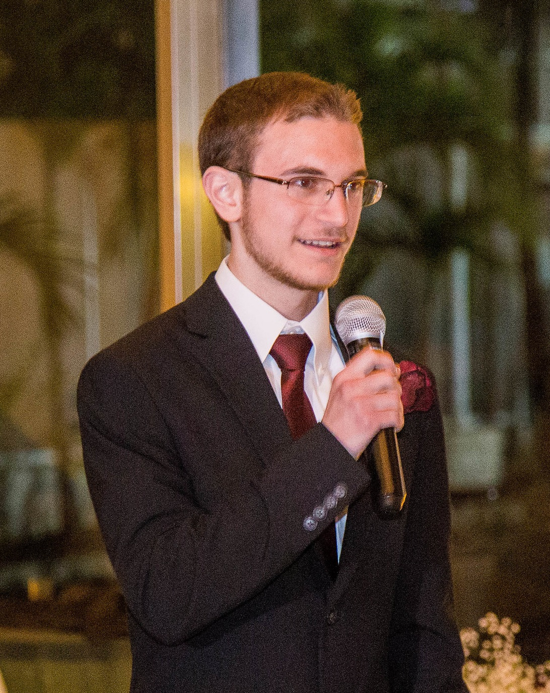
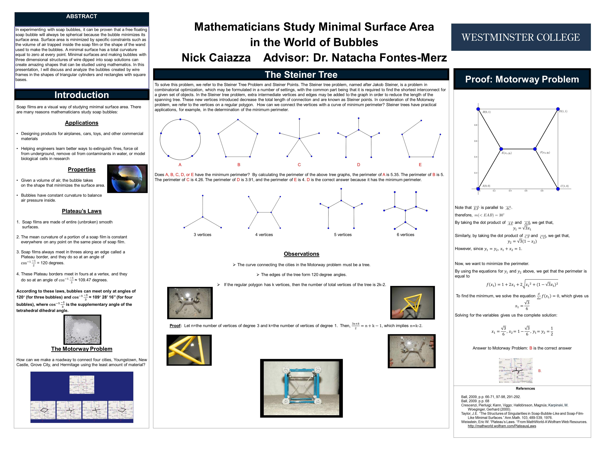
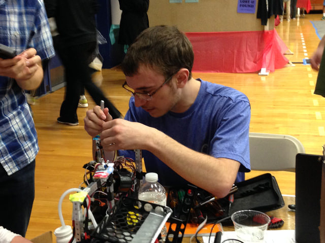
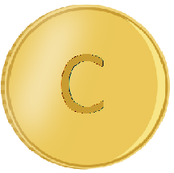

About Me

My name is Nick Caiazza, I'm currently a PhD student at Washington University in St. Louis. My interests include web development, programming, video games.
Previous Education
Westminster College, New Wilmington, PA
Majors: Mathematics & Computer Science
Graduated: May 2018
Previous Research
Minimal Surface Area

Conducted research on approximating the minimal surface area of a shape using soap films. The motorway problem was used to present practical applications for research results, and multi-variable calculus was used to prove results. In experimenting with soap bubbles, it was proven that a free floating soap bubble will always be spherical because the bubble minimizes its surface area. This research was presented in the Spring at the University Research & Arts Symposium at Westminster College with a poster presentation and demonstration. (3rd place winner)
Trinity College International Robot Contest

With a teammate, using C++ and Arduino to program, a robot was built to navigate a mock model home in search of a fire. The fire was represented by a burning candle which the robot then worked to extinguish. The robot was designed to traverse the maze using sensors to detect objects and adjust its movements accordingly. Attached to the robot were heat sensors to detect the candles flame and then, a fan was used to extinguish it. The robot was also equipped with sound activation.
Created My Own Cryptocurrency

For my senior math capstone, I created my own cryptocurrency using Java to analyze the mathematics behind them. The results were presented at Westminster College's Undergraduate Research and Arts Celebration as well as the Youngstown State University Undergraduate Mathematics Conference.
Hash Functions & Intrusion Detection
I am conducted capstone research on a hash function optimized for intrusion detection. The goal was to create a hash function using a sponge construction that would be ideal for an intrusion detection system. My progress was presented at Westminster College’s Undergraduate Research and Arts Celebration and Penn State Behrend's Sigma Xi Conference.
Experience
Mathematics & Computer Science Tutor September 2015 - May 2018
I worked as a Tutor for Westminster College's Mathematics & Computer Science department when I attended college there. Classes I tutored:
- Pre-Calculus
- Calculus I
- Calculus II
- Intro to Computer Science
Student Web Developer September 2016 - July 2018
Worked in Coldfusion, HTML, CSS & JavaScript to assist LIS and Marketing in designing public-facing webpages and registration forms. Developed web tools for various offices on campus. Under the supervision of the web developer, completed a number of complex web development projects encompassing both front-end design work visible at
http://www.westminster.edu, and backend data management tools for managing information on the public website and backend administrative system. Examples of work include new administrative tool for Planetarium staff to create and update Planetarium show pages, the landing page, student registration form for the semester’s Professional Networking Symposium, a new website portal for Undergraduate Research and many revamped/improved pages and forms for offices including LIS, Duplicating, Academic Affairs, Career Center, Bookstore, Alumni Relations and Dining.
- Strengthen developmental methodologies by introducing a code quality document.
- Modify existing software to correct errors, adapt to new hardware and improve performance.
- Code websites using HTML, CSS, JavaScript, SQL and ColdFusion.
- Draft comprehensive reports to document bugs and design flaws.
- Design and develop numerous computer software web applications.
- Oversee major new enhancements to existing software systems.
- Maintain existing applications and designed and delivered new applications.
- Develop code fixes and enhancements for inclusion in future code releases and patches.
- Stress test server code to validate code changes.
- Evaluate potential software products based on new and existing system development and migration requirements.